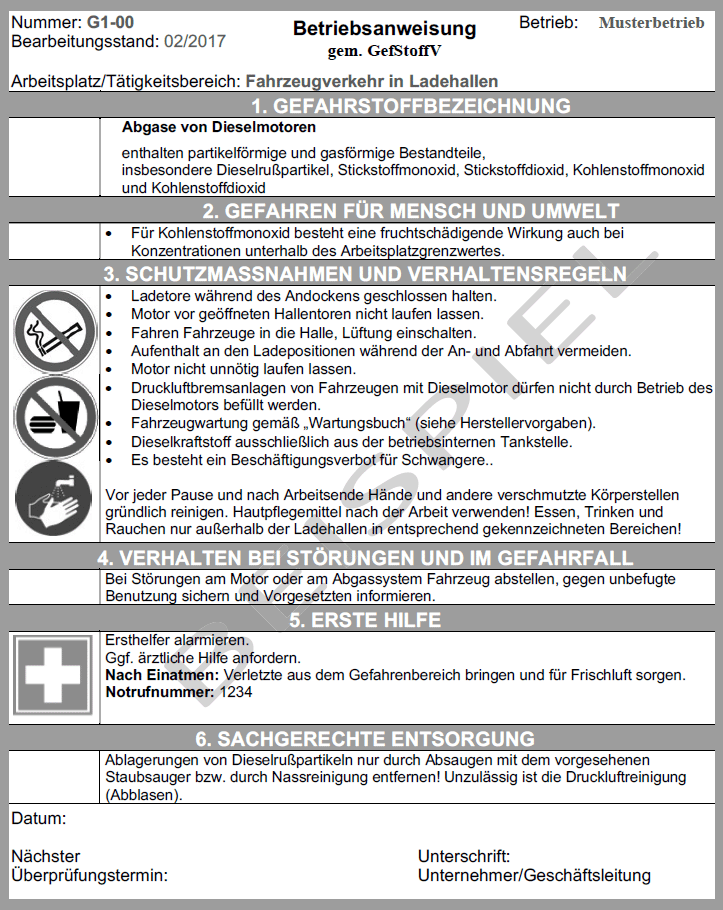

Diese beispielhafte Betriebsanweisung gilt für einen besonderen Betrieb und ist nicht eins zu eins auf andere gleichartige Betriebe übertragbar. In diesem Beispiel fahren LKW zum Be- und Entladen an eine Rampe bzw. in die Halle. In der Halle werden ansonsten nur Elektrostapler eingesetzt. Die Gefährdungsbeurteilung hat ergeben, dass alle Arbeitsplatzgrenzwerte eingehalten sind. In diesem Optimalfall, der die Zielvorgabe der TRGS darstellt, könnte die Betriebsanweisung wie folgt aussehen.
